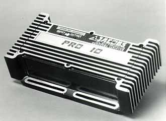
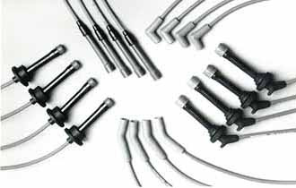

Since 1975, Jacobs Electronics has led the aftermarket industry with the most innovative and technologically advanced line of products on the market. Dr. Christopher Jacobs, inventor of the line, holds 23 worldwide patents in electronics. The result of Dr. Jacobs technical expertise and professional experience is the development of an incredibly effective line of ignition products, delivering performance and fuel efficiency unmatched in the industry.
Ultra Team is a complete factory-coordinated ignition system, made up of the Engergy Pak computer, Ultra Coil, Energy Core spark plug wires, and Wire Markers and Separators. This high-powered system is guaranteed to produce an immediate increase in performance, horsepower, low end torque, mileage and engine life for virtually all vehicles.
Energy Pak, the "brain" of the system, adjusts spark output, cylinder-to-cylinder, according to engine need, producing smooth running at low or high rpm, at higher altitude, in cold weather or under weak spark plug conditions. Available in 4 different models; Perform Master, Pro-Street, Pro 10 and Marine Master.
Omni-Pak is a complete high-energy computer controlled ignition and Jacobs variable magnetic ignition coil. Fully waterproof and shockproof. By optimizing the compatibility of the coil's characteristics to that of the electronic ignition effectiveness, hence a significant boost in mileage, power, and performance is attained.
Ultra Coil has all the benefits of the Energy Coil, but more so. It is the most rugged coil available with lowest primary resistance of any street-driven coil (only 0.45 ohms). Ultra Coil is a real must for the racer a performance enthusiast, anyone with a modified engine.
Energy Coil has a unique patented variable magnetic core design which improves the engine power, reliability, smoothness and fuel economy while other coils permit fouling and higher rpm to decrease their output.

Energy Core 8mm Wires feature true metal core and increase performance on vehicles by delivering the maximum spark energy possible, but with no noise to interfere with your communication/audio system. The Energy Core is the only pure silicone, teflon-coated wire available with distributor and plug boots vulcanized to the wire, making them 100% waterproof. Also available with Ceramic boots. Comes in 3 different fits.